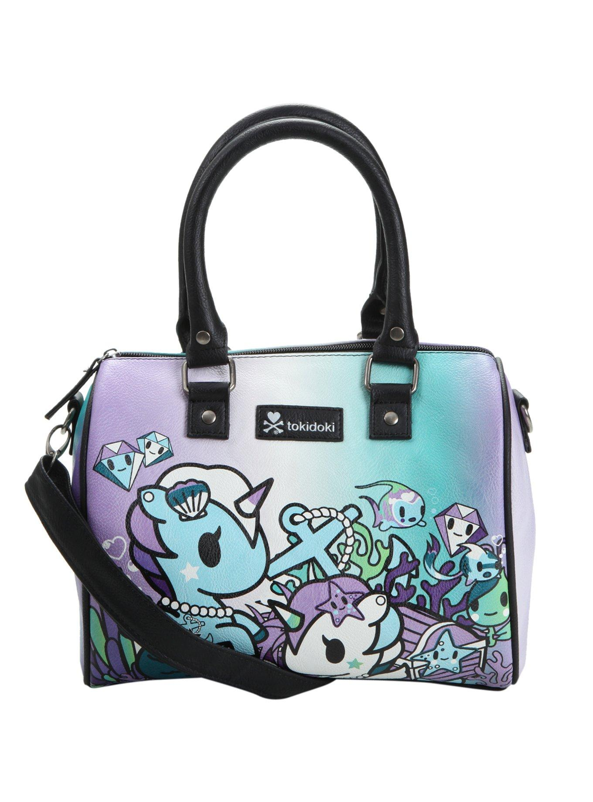
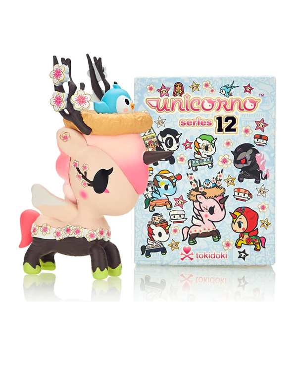
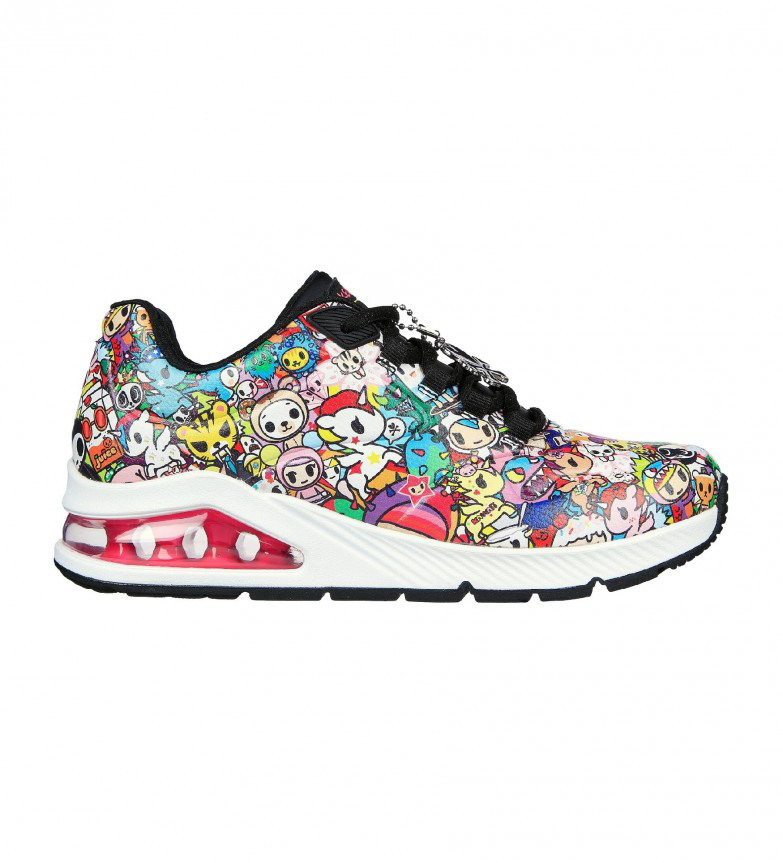
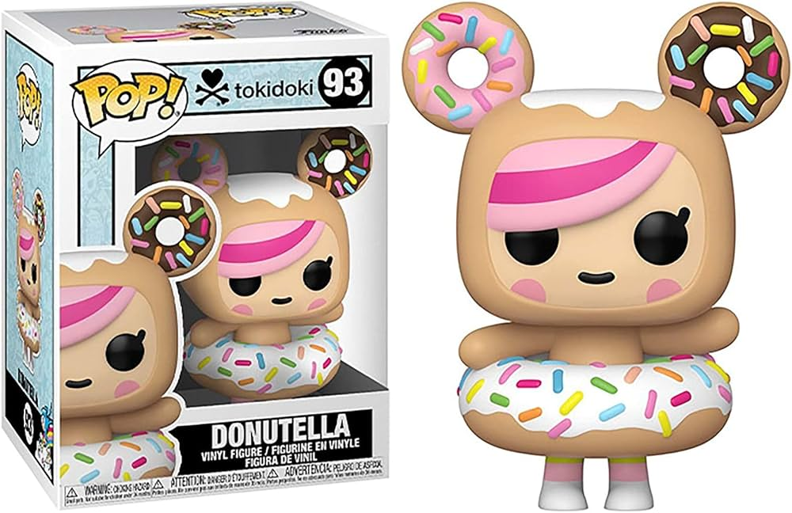
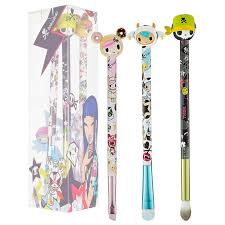

Tokidoki, la icónica marca de diseño japonesa, acaba de lanzar una nueva colaboración con Loungefly para una exclusiva colección de mochilas y accesorios. Esta línea presenta a los personajes más populares de Tokidoki, como Cactus Friends y Unicorno, en vibrantes colores y detalles únicos. Los fans podrán encontrar desde mochilas hasta carteras, todos con la característica estética kawaii y gráfica de la marca. La colección se lanzará en tiendas selectas y en línea a partir de diciembre de 2024.

Tokidoki ha anunciado el lanzamiento de una nueva serie de figuras de vinil de edición limitada, Unicorno 2024. La colección contará con versiones renovadas de los famosos unicornios de la marca, con nuevos colores, accesorios y detalles brillantes. Cada figura estará numerada y será parte de una serie exclusiva de solo 500 unidades, lo que las hace aún más codiciadas por los coleccionistas. Además, los fans podrán obtenerlas a través de la tienda online oficial de Tokidoki y en tiendas especializadas. Con esta nueva línea, la marca reafirma su presencia en el mundo del arte y el coleccionismo.

Tokidoki ha revelado una nueva colaboración con la famosa marca de ropa Adidas, lanzando una colección limitada de zapatillas y ropa deportiva. Los diseños incorporan los adorables personajes de Tokidoki, como Cactus Pup y Donutella, en una mezcla de colores vibrantes y gráficos llamativos. Las zapatillas, disponibles en modelos tanto para hombres como para mujeres, combinan confort y estilo, mientras que la ropa incluye sudaderas, camisetas y gorras con el característico estilo kawaii. La colección estará disponible en tiendas selectas y en línea a partir de enero de 2025, atrayendo a los fanáticos de la moda y el arte de Tokidoki.

Tokidoki ha lanzado una nueva colección de productos para el hogar en colaboración con Target, que incluye desde mantas y cojines hasta tazas y alfombrillas. Esta línea, que fusiona la estética kawaii con funcionalidad, presenta a los personajes más queridos de Tokidoki, como Sandy, Bastardino y Donutella, en productos coloridos y divertidos. Los artículos, diseñados para dar un toque único y alegre a cualquier espacio, estarán disponibles en tiendas y en la página web de Target a partir de este mes. Esta nueva colaboración refuerza la popularidad de Tokidoki en el mercado del diseño de interiores, atrayendo tanto a coleccionistas como a fanáticos del estilo juguetón de la marca.

Tokidoki ha lanzado recientemente una colaboración exclusiva con Funko, creando una serie de figuras Pop! de edición limitada. La nueva línea incluye versiones de vinil de los personajes más emblemáticos de Tokidoki, como Unicorno, Cactus Friends y Donutella, con un toque único y coleccionable. Cada figura viene en un diseño especial, con detalles metálicos y brillantes, y algunas versiones tienen variantes raras, lo que las convierte en un objeto de deseo para los fanáticos. La colección ya está disponible en tiendas y en línea, y se espera que se agote rápidamente debido a su exclusividad.

Tokidoki ha lanzado una colaboración con la marca de cosméticos Sephora, creando una línea de maquillaje con los adorables personajes de la marca. La colección incluye paletas de sombras de ojos, labiales, iluminadores y brochas, todos con diseños inspirados en los iconos de Tokidoki, como Sandy, Cactus Friends y Donutella. Los productos no solo son de alta calidad, sino que también ofrecen un toque de diversión y color, perfectos para los fanáticos que buscan añadir un poco de su estilo único a su rutina de belleza. La colección está disponible exclusivamente en Sephora y en línea desde este mes.